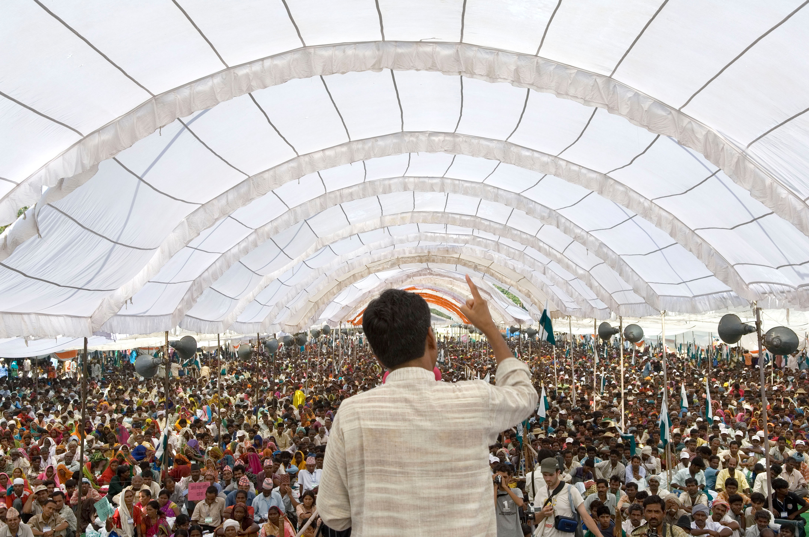

Hi! My name is Rudra and I was born on the 23rd of July; making me Leo!
I grew up as a single child whose parents were both working;
so I often had to find unique and different ways of spending my time.
Soon enough, me and my parents moved to Canada, where I have been living ever since.
Because of my upbringing and mixed cultural identity, I have some intersting interests and skills.
Interests
Wikimedia / CC BY-SA (https://creativecommons.org/licenses/by-sa/4.0)
I am mostly interested in 4 things: cooking, learning, gaming and sports. A lot of my
childhood memories involve cooking, because I was often home alone and wanted to cook
something special for my mom and dad when they came back from work. Because of this;
I learned how to cut onions before I learned multiplication! I thoroughly enjoyed cooking
and consider it a “stress-buster” and my parents have the side benefit of eating new and
exciting foods every so often! I also love learning; and I spend a lot of my time reading
and learning about various topics. I really enjoy learning about biology and chemistry;
and I find comfort in reading about medications and the human body. I also have a keen
interest in business and computer science; and I have even built a computer before! Furthermore,
I enjoy playing games on my PS4 whenever I have free time, usually playing Call of Duty or
Minecraft.
When I’m not playing games I like to go outside and play soccer or cycle, which I try to do once a
day!
Skills
I have some very random and weird skills. I am extroverted and I love public speaking, and it was
one of my dreams to speak in front of a huge audience. Furthermore, I can also type faster than most people,
typing 98 words per minute. Also thanks to my mom, I know how to clean pretty well, even though I really
hate cleaning my room! Finally, I believe I have leadership skills, as I have led a group of people in
many situations!

Wikimedia / CC BY-SA (https://creativecommons.org/licenses/by-sa/4.0)